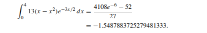
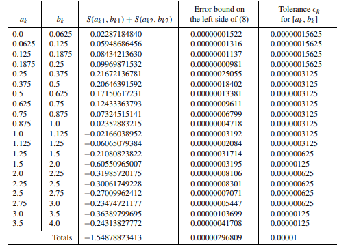
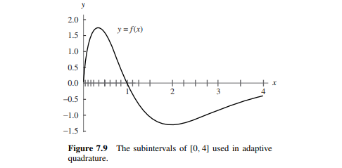
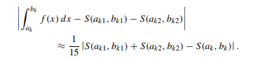

一种很可爱的积分近似法，学的时候顺便看了好多论文qaq

$\rm{0x01}$ 前言
首先阐明一点，自适应辛普森算法($\rm{Adaptive ~Simpson’s~ rule}$ )是一类近似算法($\rm{Approximation ~algorithm}$)，主要用于求较难反导的函数的积分。大概在信息计算的时候中很常用？
其思想是利用二次函数来不断拟合($\rm{Overfitting}$)所求曲线，而所谓的$Adapative$（自适应）则是用于优化时间复杂度的方法。
嗝…总之…比较简单？
表示看了两篇外国学者的论文，感觉好像思路已经比较清晰的样子。
$\rm{0x02}$ $\mathcal{Simpson~Formula}$ 辛普森公式
稍等，这个跟算法的关系不大，主要是公式：
事实上吧，求积分的话，大多数都是直接套辛普森公式的。并且这个公式是广泛适用的……只不过误差有点儿人大$233$
这其实是我们用二次函数不断拟合的结果，推导过程大致如下$^{[1]}$：
因为 $g(x)$ 是用来拟合 $f(x)$ 的，所以有：
求 $g(x)$ 的不定积分为：
然后再带入 R 和 L ：
然后提公因式，原式为：
把里面展开来：
重新整理一下式子：
再整理：
代换可得：
把这三个式子带回去， 最后我们就得到了$\rm{Simpson}$ 积分公式：
于是我们就得到了所谓的$\rm{Simpson~Fomula}$。但事实上，对于一段“跌宕起伏”的函数，我们还是无法准确地去用一个二次函数的拟合来刻画。于是——
$\rm{0x03}$ $\mathcal{Adaptive~Simpson~Rule}$ 自适应辛普森法
我们考虑，如果把区间们稍微划分地更细一点，那是不是会好呢？答案是一定的。那么我们可以考虑定向二分。但是……定向二分始终存在一个问题，就是它太笨了，笨到如果$[l_1,r_1]$已经满足精度要求了，我们却还要一直分；笨到$[l_2,r_2]$分的次数根本不够用——但我们并不可以得到反馈。
于是考虑自适应。
所谓自适应，说的直白点，无非就是需要多分治几次的地方，多分治几次；不需要的则可以少分治几次
你会发现，其实他节约的就是一个点——时间效率。
举个栗子$^{[2]}$：
比如有这么个函数$\rm{f (x) = 13(x − x^2)e^{\frac{−3x}{2}} }$，我们要求$\int_{0}^{4}f(x) \rm{~dx}$ 并要求精度误差在$1e-5$ 以内。而我们有两种方法去解决：
- 以固定的比例以及约束二分。
- 运用自适应策略分配
那么我们首先要知道他真正的$value:$

看起来好像海星？然后我们用两种方法都试一试：
首先是自适应法，我们发现最后只需要求$20$段区间。表中的$a_k \& b_k$表示左右区间，$S(l,r)$表示$[l,r]$内、运用$0x01$中的公式计算的，$\rm{Error~Bound}$表示误差界，$\rm{Tolerance}$表示计算时需要的误差(程序设计时会讲)。

那么最后算出来的值是$ −1.54878823413$ ，与真实值误差为$0.00000013840 $，一共调用了$79$次函数估值（留个坑，后文会讲）。
那么绘制出来的函数图像大概长这样：
好像很流畅？$233$
那么第二种方法是定值分段。我们考虑分成区间$[0,4]$分为长度为$0.03125$的$128$段，并运用$0x01$的$Formula$，最后得出的结果为$−1.54878844029$，误差为$0.00000006776$……
好像是第一个误差的二分之一？听起来好像误差小了，但是却需要$257$次函数估值的调用……相比之下，我们可以获得更优越的性能，而那误差也是不需要考虑的啦的啦～
但是比起$1e-5$精度来说……这波稳赚啊$233$
$\rm{0x04}$ $\mathcal{About~Code~}$ 代码实现
首先是$LuoguP4525$的暴力解法：
1 |
|
这…严格意义上讲，不能算是自适应辛普森法——更准确地说，四不像，或者“东施效颦”之类的，都挺合适。这是我在初学这一块儿内容时的写法，他不严格正确，但是……他对的很？
至于进化版$LuoguP4526$，也是完全可以violently艹过去的：
1 |
|
但是，其真正的实现应该是这样：
1 |
|
然后我们发现这就可以跟文章上面$0x03$中的例子呼应了：每次分治时计算两次，总共分治了$39$次，最终一共计算了$78+1=79$次，而二分则是一棵有$128$个叶子节点的递归树，总共计算了$256 +1=257$次。
好的，终于要扯正题了。算法的实现其实简单，我们用拟合性算法不断$check\&calc$, 而$check$的方式也很简单，只需要判断一下两段子区间的函数值之和与整个区间的函数值之和的差值是否在精度要求范围之内，之后如果满足精度误差就直接$return$，否则对于这段区间继续递归下去。
而这个地方有个要求，就是对于$eps$，你需要不断$half$他，原因很简单，对于一整段区间$U$，要求他的返回值的$|eps(U)| \leq k$的话，那么对于其作为子集两个连续区间$A,B$，当$A \bigcup B = U$时，必须要满足$|eps(A)| \leq \frac{k}{2}, |eps(B)| \leq \frac{k}{2}$，才能保证$|eps(U) = eps(A) + eps(B)| \leq k$，所以要：
1 |
|
好了，唯一的问题在于有句话迷的很：
1 | if (fabs(t = (Lv + Rv - v)) <= eps * 15) return Lv + Rv + t / 15 ; |
这个$\leq 15 \cdot eps$是什么意思？
好吧，笔者也不清楚，但是有个结论是长这样的：
什么？你说推什么倒？小小年纪整天想着推倒学姐可不好啊$233$
什么？你还想看推倒的过程？啧啧啧，左转知乎感情专区蟹蟹～
好的，以上两段是瞎扯的，推导过程十分诡异，大家自己食用好了……
于是结束，撒花花…（不是撒笔者x）
$\rm{Referance}$
$[1]$ :$NaCly_Fish$的$blog$ $^{^{[\nearrow]}}$
$[2]$ :某篇论文 $^{^{[\nearrow]}}$
对于第二篇$refer$，借鉴的比较多（读书人的事……咳咳……），但是改了一个数据，就是$81 \to 79$，因为代码需要$233$
$Ps:$史上最不正经的$reference$诞生了……